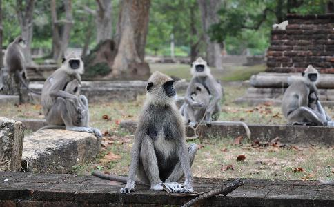

在云南省高黎贡山自然保护区，发生了这样一个真实的故事：工作人员杨周巡山时身受重伤，无法动弹，竟然遭到一只猞猁凶残的攻击，陷入绝境，眼看生命垂危！危难关头，一群灰叶猴赶到了，竟然出手相救，与猞猁展开面对面的激战，聪明的猴王更是使出奇招，帮他摆脱死神……
意外受伤，猞猁发起致命攻击高黎贡山自然保护区位于云南省腾冲、保山、泸水三县交界处，面积12.39万公顷，森林覆盖率达85%，有秃杉、大树杜鹃、连香树等1000多种植物，重点保护动物有羚牛、白眉长臂猿、云豹、灰叶猴（菲氏叶猴）、绿孔雀、红腹角雉等440种，有“天然动物园”之称。本文主人公杨周就在腾冲保护局飞云洞管护站工作，他从林业学校毕业5年了，工作就是定期巡视山林。
去年9月的一天，杨周到螃蟹岭一带例行巡视。管护站本来就位于保护区的腹地，出门就是人迹罕至的深山老林，螃蟹岭的位置更是险峻荒僻。俗话说，无限风光在险峰，这里堪称世外佳境，古木森森，飞瀑流泉，虽是盛夏，却弥漫着一种特有的凉意。
正在一条阴森的沟谷中穿行，突然地下咔的一响，杨周的脚似乎被什么东西死死咬住了，刺骨的剧痛旋即升起，把他淹没。他忍不住大叫起来，汗珠子也刷刷往下滚。低头一看，原来他踩中了机关，脚踝被一个捕兽器击中。这种东西他见过不少，都是由精钢打造，威力强大，一端固定在石头上，野兽的腿只要被夹住，就别想挣脱。不用问，这是盗猎者安放在这里的。
挣脱是不可能的，杨周下
突然，远处传来窸窣的声响，直觉告诉杨周有野兽在接近，隐隐约约他已经闻到动物的腥味。他急忙抬头观望，十几米外的灌木丛中赫然闪出一只猞猁！猞猁是一种不太常见的猫科动物，行踪诡秘，人们习惯把它与各种野猫并列，其实猞猁的个头只比虎豹略小，非常凶猛。他眼前的这只猞猁身子加上尾巴，有近两米，好家伙，真跟一头豹子差不多！它两鬓的毛丰满下垂，耳尖也长着一簇长毛，肚皮呈白色，体背及四肢上部散布着小块沙棕色圆斑。保护区中的猞猁非常罕见，所以他看得很认真。
一般的野兽都是怕人的，可这只猞猁丝毫没有逃避的意思，绿莹莹的眼睛盯了他一会儿后，竟慢慢向前凑过来。这太反常了，从它的神态看，杨周明白绝对是来者不善！大部分野兽不会攻击人，可有些野兽由于种种原因，却专门攻击人。这只猞猁显然属于后者，它的头部很明显有伤疤，可能性情已经不正常了。猛兽都有洞察对手实力的能力，若是强者就甘拜下风，敬而远之；若是弱者就不由分说，坚决吃掉。这只老练的猞猁绝对看出了杨周的虚弱和困窘，他伤口的鲜血对它的食欲是一种强有力的刺激……看来他的处境十分不妙！
杨周的心中非常慌乱，却只能强迫自己镇定。他打算依靠自己丰富的经验和对野兽的了解先稳住它，不成想它已经虎视眈眈逼了上来。他急忙张开双臂，使自己看起来很大，又捡起石头示威。
猞猁一点也不害怕，反而好像受了什么刺激，愤怒地咆哮一声，扑到杨周的近前，张开大嘴，闪电般地在他的大腿上咬下了一块肉！还没等他反应过来，猞猁已经转身跳开了。杨周几乎快疼昏了，可又不敢大喊大叫，因为那会更加刺激它疯狂的攻击性。他拼命往后爬，可被铁链子死死拖住了，很明显他已身陷绝境！
猴王仗义，带领群猴抵挡猞猁突然，四周好像嘈杂起来，杨周抬头一看，原来是一群猴子围了上来。它们披着灰毛，颜面及手足却是黑色的，个头不大，尾巴很长。他认出这是保护区里常见的灰叶猴，足有十几只，看起来都挺凶。它们来干什么？
猛兽进食都不喜欢被围观，猞猁对着猴子们“嗷嗷”叫起来。本来灰叶猴非常怕猞猁，因为那是它们的天敌之一。可这群猴子却并没逃走，反而也向猞猁示威。杨周看出来了，有一只个头明显大的猴王在指挥！猞猁气急败坏地扑向近前的几只猴子，看样子要大开杀戒了！那几只猴似乎早有防备，霎时间便四散奔逃，猞猁不肯罢休，一气追出去老远。
猞猁见逮不着猴子，又朝杨周跑来，还没等它到跟前，躲在附近的猴王和另外一些灰叶猴又龇牙咧嘴地迎了上去。猞猁张牙舞爪一番，以为能把猴子们吓跑。可灰叶猴们似乎都吃了豹子胆，在猴王的带领下，突然齐心协力向它猛扑过去！
俗话说，狭路相逢勇者胜，灰叶猴虽不是猛兽，但个个很勇敢，因为争夺领地，经常发生大的群体性争斗，所以“实战经验”十分丰富。因此仗着“猴多势众”，围住猞猁一通猛攻。猞猁被这气势给吓住了，一时无从下手，只得跳到了树上。
看着猞猁退开了，杨周心里稍微安稳些了，多亏了这些灰叶猴，只是不知道它们为什么如此仗义，搭救他这个陌生的人类呢？猴王长得非常强壮，头顶毛又长又密，形成黑褐色的毛冠，那是威力的象征。可由于十分紧张，他想不起在哪儿见过……
猞猁从来没吃过这么大的亏，突然兽性大发，闪电般挥舞粗壮有力的前爪，凌空扑下，把几只灰叶猴击倒在地，看来这家伙发疯了！群猴只得从杨周身边跑开藏起来。这下他又彻底暴露在猞猁嘴下！猞猁折转身，恶狠狠地向杨周逼过来，看来它的主要目标还是他。它的神态狰狞异常，眼睛都冒火了！这无疑是一只对人类怀有仇恨的猞猁，不把他咬死是不会罢休的。
紧要关头，只见猴王尖啸一声，连蹦带跳地追向猞猁，它的速度快得出奇，很快追到猞猁身后！别的猴见状也都呼啸而至！猞猁似乎明白，如果它敢吃杨周，群猴真的会跟它拼命，后果相当严重！它比较识趣，一转头，背对着杨周。猴王也停止了进攻，双方对峙起来。杨周的心中感慨不已，猞猁让他恐惧痛心，而猴群则太让他感动了。
又僵持了一会，猴王突然离开了，但很快返回，手里拿着一根树枝。它爬上树，把树枝扔在杨周跟前。杨周一看，正好可以当武器，立刻拿在手中，猴王真是太通人性了！他高兴地向它挥挥手。
当杨周仔细看这根树枝时，几乎惊呆了！天哪，这是巧合还是……
奇迹脱险，人兽恩仇各有缘由 这时，狰狞的猞猁又转过身向杨周进攻，到嘴的肉一直没吃上，它都快气疯了。显然它认为杨周已经没有任何反抗能力，对他手中多了的这根树枝也没当回事。当它恶狠狠扑上来时，
片刻后，猞猁竟然惨叫起来，原地打转，甩头乱吐，随即便逃进了附近的灌木丛里！这一切都在杨周意料之中，因为，他认出那根树枝是从“见血封喉”树上折来的！见血封喉又叫箭毒木，是一种常绿大乔木，枝干流出的白色汁液有剧毒，当地少数民族将之涂于箭头上，射杀野兽。猞猁刚才挨得不重，但也够它受的。
成年的野兽对各种有毒的动植物是非常敏感的，绝不会招惹。灰叶猴王经验丰富，当然知道“箭毒木”的厉害，但它竟然为杨周折来树枝御敌，如此灵性，真乃闻所未闻，令人惊叹！
杨周总算彻底脱离了危险，与猴王对视起来，突然他发觉猴王有些面熟。但他来不及细想，是非之地不可久留。他抓起石块，奋力砸断了铁链，咬紧牙关蹒跚地返回管护站。
猴王带着手下跟随了很远，看他快到家才撤走。杨周一路因失血昏昏沉沉，到达管护站后，马上被同事送往医院。
等杨周伤好一些后，讲了自己奇特的经历，同事们都觉得不可思议。可这就是事实！猴王的举动充分证明：作为灵长类，灰叶猴的智能看来比人们想象得还要高！
杨周心潮澎湃，仔细回想自己与灰叶猴的渊源，突然茅塞顿开：一定是它！原来，两年前，杨周和几名同事在山上截获一个盗猎小团伙，救出了十几只动物，其中有一只刚出生不久的灰叶猴，它的妈妈已经被杀害。杨周主动承担了喂养它的任务，对它悉心照料，无微不至。这只小公猴慢慢长大，竟把他当成了亲人，产生了特别的依恋。这样很有可能影响它将来的野性，杨周克制住自己内心的
没想到它果然非比寻常，依靠自己的体力和智慧，竟然当上了猴王！虽然有了“高官厚禄”，它仍没忘杨周对它的恩情，那天偶然相遇，竭力救他脱险……它变化非常大，他已认不出；而他基本没变，它当然记得了！人类善待动物，真会得到意想不到的回报啊！
但杨周的心里难免有些遗憾和费解，就是那只猞猁，它差点让他“壮烈殉职”，想想太后怕了。同样
大约半个月后，这个疑问终于找到了答案：管护站抓住了一个盗猎者，据他交代，他曾经在黑虎岭捣毁过一个猞猁巢，杀死几只小猞猁，母猞猁顽强抵抗，受伤后逃脱了。猞猁有明确的领地，不用问，袭击杨周的猞猁就是那只母猞猁。亲生孩子都被人害死了，它又不能分辨，当然对上山的人都恨之入骨了……